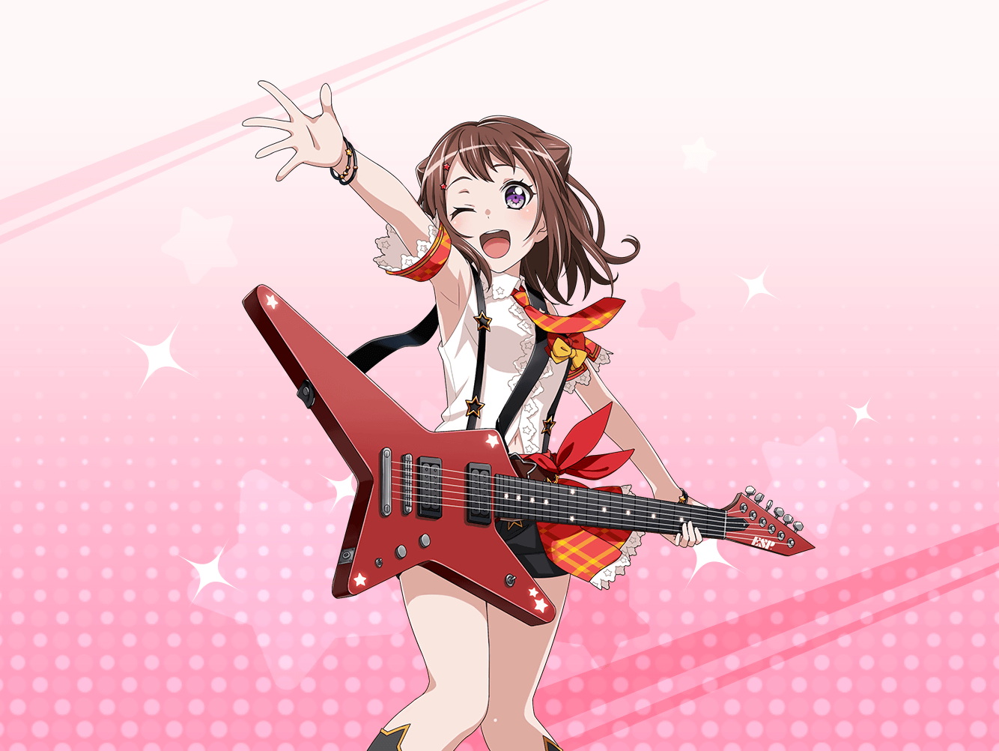

香澄
あっ、 {{userName}}さんっ！ こんにちはっ！
香澄
スタジオで私たちが練習してるの、
いつも見てくれてますよねっ
香澄
私のギター、どうですかっ？
少しでも、上手くなってたらいいんだけどなぁ
香澄
このギター、ランダムスターっていうんですよ♪
赤くて星みたいで、可愛いでしょ！
香澄
そうだ！ 私とランダムスターが、
初めて出会った時のこと、
聞いてくれますかっ？
香澄
初めて有咲のとこで見たとき、
キラキラしてて、もうもうもう、
ほんっとうに可愛くて！
香澄
一目でズキューンって来ちゃったんですっ
香澄
最初に音を出したときは
アンプにつないでなかったから
香澄
ちゃんとした音は出なかったんですけど……
香澄
弾いたら、小さく『シャン』って
音が聞こえたんですっ！
香澄
もう、その音に興奮しちゃって！
いっぱいシャンシャンしちゃいましたっ！
香澄
でも、おたえは、
ランダムスター持ってる人は
『変態』だって言ってて……
香澄
変な人が多いって
香澄
そうなのかなぁ？
香澄
私は誰が見てもドキドキしちゃう、
すごいギターだと思うけどなー
香澄
{{userName}}さんも、そう思いませんか？
香澄
うんっ！ ですよねっ！
えへへー♪ ありがとうございますっ
香澄
じゃあこれからも、このギターで、
いーっぱいキラキラするから、
香澄
見ててくださいねっ！ 約束です！